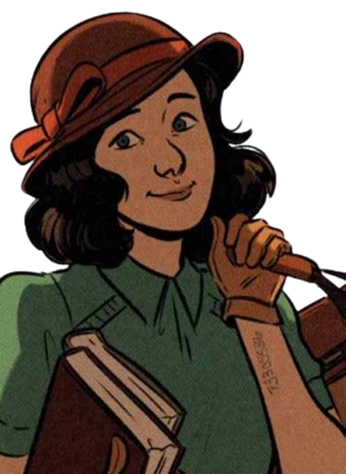
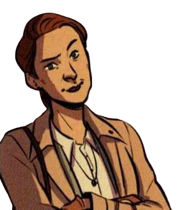
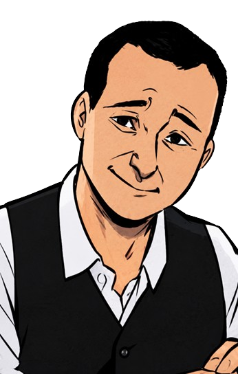
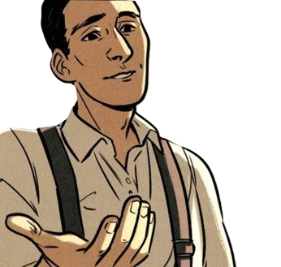
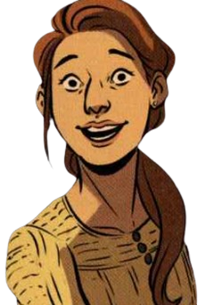

Dita
Dita Kraus werd geboren op 12 juli 1929 in Praag. Tijdens de Tweede Wereldoorlog werd ze samen met haar ouders naar concentratiekampen gedeporteerd. In Auschwitz werd ze verantwoordelijk voor een kleine geheime bibliotheek. Ze overleefde de Holocaust en werd later lerares en schrijfster. Dita overleed op 18 oktober 2025, op 96-jarige leeftijd.

Elisabeth
Elisabeth Polach was de moeder van Dita. Haar geboortenaam was Elisabeth Adlerová. Ze werd samen met haar man en dochter naar Theresienstadt en later Auschwitz gedeporteerd. Na Auschwitz werd ze naar andere kampen overgebracht. Ze overleed op 29 juni 1945, kort na de bevrijding van Bergen-Belsen.

Hans
Hans Polach was de vader van Dita en werkte als advocaat. Hij woonde met zijn gezin in Praag. In 1942 werd hij samen met zijn vrouw en dochter gedeporteerd. Het gezin kwam later in Auschwitz terecht. Hans overleed daar op 5 februari 1944.

Fredy
Fredy Hirsch werd in 1916 geboren in Duitsland. Hij was een Joodse sportleraar en opvoeder die veel voor kinderen deed. In Theresienstadt en Auschwitz organiseerde hij activiteiten en onderwijs voor kinderen. In Auschwitz hielp hij bij het opzetten van een kinderblok en gaf hij Dita de verantwoordelijkheid over de boeken.

Margit
Margit is een personage dat in het verhaal voorkomt. Over haar echte leven is minder betrouwbare informatie beschikbaar. Daarom is het belangrijk om haar verhaal in het boek te onderscheiden van de historische feiten over Dita Kraus en haar familie.